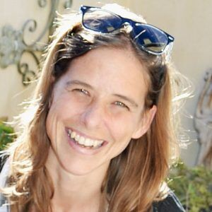
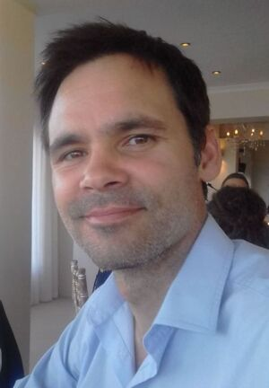

Dr Jennifer Veitch
Principal Numerical Ocean Modeler at SAEON Egagasini and founder
of the SOMISANA Initiative. Responsible for bringing SAEON and
OCIMS together on operational modelling.

Dr Giles Fearon
Senior Operational Ocean Modeler at SAEON, responsible for
expanding the modelling framework and for skills sharing and
development .
Mr Nkululeko Memela
Junior Operational Ocean Modeler at SAEON responsible for model
testing, evaluation, reporting and maintains this website.